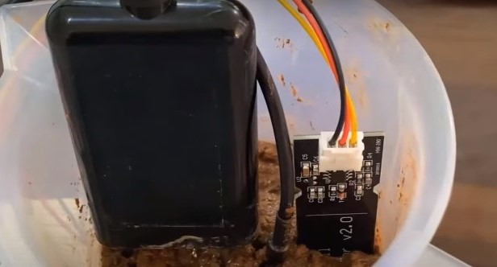

Introducing Soil Testing Machine
Sensor based Soil Testing Machine, that produces apt results of NPK Levels, Moisture Content and Temperature of the Soil within minutes.
Quick and Efficient
Nutrient Testing Kit
With soil nutrient monitoring & analysis system the farmer will be able to monitor soil moisture, soil temperature, and soil nutrient content like Nitrogen, Phosphorous & Potassium. The farmer can monitor all these parameters wirelessly on a mobile phone or the PC System.
The Sensors used are of the heighest quality that produces upto 95% accurate results, in 1/100th of time taken by the Soil Testing Labs.
Nutrient Testing Kit
Features and Specifications
Chemical Less Testing
The machine does not make use of any Chemicals in order to analyze and produce the results.
How it works? The machine makes use of Specific sensors such as Capacitive Soil Moisture Sensor,NPK Sensor,and DS18B20 Temperature Sensors which are powered by a DC Source Battery,connected with a Arduino Board, NRF24L01 Wireless Transceiver Module, using which it interacts with the server: ThinkSpeak,so as to upload and display the findings.
We used the Thingspeak Server to Monitor the data in graphical & numerical format. We used the WiFi network in the field to send the data to the server.
Accurate & Steadfast Results
The device produces 90-95% accurate results and analysis of the nutrient content of the soil, in just about a minute or so.
The device makes use of sensors that have an upward accuracy of about 95-97%, and hence is able to provide with such robust and steadfast results and analysis.
Quick Analysis
Since the device makes use of hardware sensors and softwares it is able to provide very quick and efficient result and analysis.
The device is able to provide us with the results in just about a minute or so, and even uploads the findings to ThinkSpeak Server, such that it couls be viewed from anyware.
Result Analysis
Result analysis as received from the device, depicting the levels of Nitrogen, Phosphorus, and Potassium content, along with temperature and moisture content of the soil sample.
Independent Use
The device is very simple to use,and can be used by almost anyone, and does not require any skills to be used.
Unlike the traditional devices which requires a skilled chemist to perform the tests, and update the results.
Reliable Technology
To measure the Soil Moisture, we used a Capacitive Soil Moisture Sensor,temperature is measured using DS18B20 Waterproof Temperature Sensor, to measure the Soil NPK Values, we used a Soil NPK Sensor interfaced with Arduino.
The sensors used are extremely reliable and are able to produce the results upto an accuracy of 90-95%.
Accuracy of 90-95%, in a fraction of time!
Why Us?

Efficient and Quick Results
Easy to use
Cheap Alternative

Chemical Free
Technology Used
Components and Softwares Used
Capacitive Soil Moisture Sensor
Temperature Sensor
NPK Sensor
Receivers
Transducer
ThinkSpeaks Server
Capstone Project
Department of Mechanical Engineering
Thapar Institute of Engineering and Technology, Patiala, Punjab.
Copyright © AnubhavRastogi
Designed by AnubhavRastogi